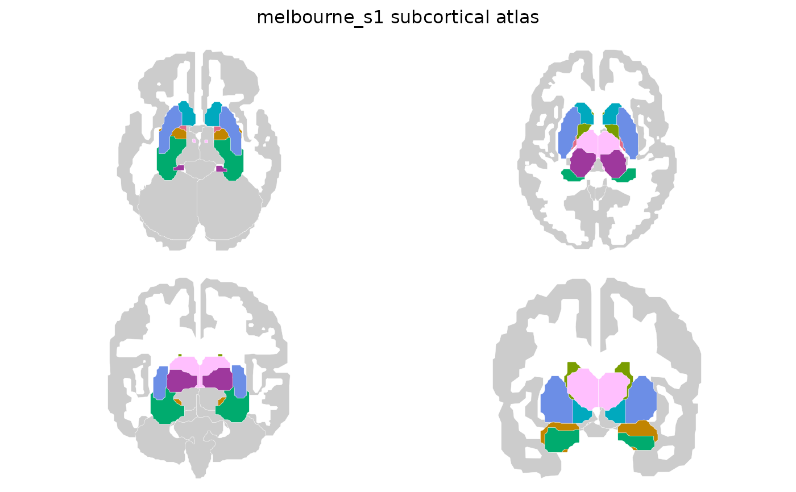

The Melbourne Subcortex Atlas parcellates the human subcortex from
resting-state functional connectivity gradients, at four nested scales.
Each atlas is drawn in four views, two coronal and two axial, with the
surrounding brain in grey for anatomical context. All contain 2D polygon
geometry for ggseg::geom_brain() and 3D mesh data for
ggseg3d::ggseg3d().
Usage
melbourne_s1()
melbourne_s2()
melbourne_s3()
melbourne_s4()
melbourne_s1_7t()
melbourne_s2_7t()
melbourne_s3_7t()
melbourne_s4_7t()Value
A ggseg.formats::ggseg_atlas object (subcortical).
Details
The scales are hierarchical: every parcel at a finer scale nests inside one
parcel of the scale above, so melbourne_s1() regions are unions of
melbourne_s2() regions and so on. Colour follows that hierarchy, one hue
per parent structure with its subdivisions in shades of that hue, so a
structure is recognisable at every scale.
The *_7t() atlases are the 7 Tesla variants, derived from higher
resolution data and parcellated slightly more finely than their 3 Tesla
counterparts at the same scale.
Functions
melbourne_s1(): Scale I, 8 structures per hemisphere: hippocampus, amygdala, nucleus accumbens, pallidum, putamen, caudate, and the thalamus split into an anterior and a posterior division.melbourne_s2(): Scale II, 16 structures per hemisphere. Each scale I structure splits in two, along an anterior-posterior, medial-lateral or core-shell axis.melbourne_s3(): Scale III, 25 structures per hemisphere.melbourne_s4(): Scale IV, 27 structures per hemisphere, the finest parcellation published for 3 Tesla data.melbourne_s1_7t(): Scale I from 7 Tesla data, 8 structures per hemisphere.melbourne_s2_7t(): Scale II from 7 Tesla data, 17 structures per hemisphere.melbourne_s3_7t(): Scale III from 7 Tesla data, 27 structures per hemisphere.melbourne_s4_7t(): Scale IV from 7 Tesla data, 31 structures per hemisphere.
References
Tian Y, Margulies DS, Breakspear M, Zalesky A (2020). Topographic organization of the human subcortex unveiled with functional connectivity gradients. Nature Neuroscience 23:1421-1432. (doi:10.1038/s41593-020-00711-6 )
Examples
melbourne_s1()
#>
#> ── melbourne_s1 ggseg atlas ────────────────────────────────────────────────────
#> Type: subcortical
#> Regions: 8
#> Hemispheres: right, left
#> Views: axial_1, axial_2, coronal_1, coronal_2
#> Palette: ✔
#> Rendering: ✔ ggseg
#> ✔ ggseg3d (meshes)
#> ────────────────────────────────────────────────────────────────────────────────
#> hemi region label
#> 1 right hippocampus Hippocampus_Right
#> 2 right amygdala Amygdala_Right
#> 3 right thalamus posterior Thalamus_Posterior_Right
#> 4 right thalamus anterior Thalamus_Anterior_Right
#> 5 right pallidum Pallidum_Right
#> 6 right accumbens Accumbens_Right
#> 7 right putamen Putamen_Right
#> 8 right caudate Caudate_Right
#> 9 left hippocampus Hippocampus_Left
#> 10 left amygdala Amygdala_Left
#> ... with 6 more rows
plot(melbourne_s1())
